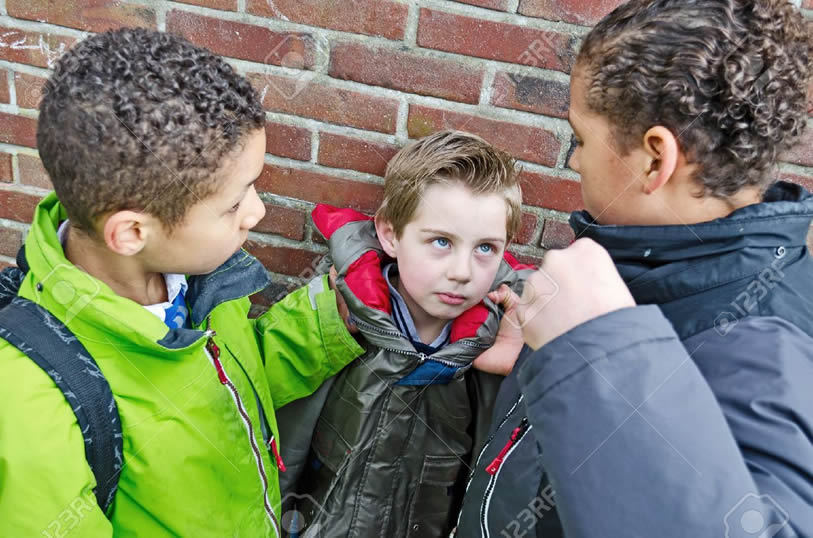

Why don’t more bystanders intervene?
- They think, "It's none of my business."
- They fear getting hurt or becoming another victim.
- They feel powerless to stop the bully.
- They don't like the victim or believe the victim "deserves" it.
- They don't want to draw attention to themselves.
- They fear retribution.
- They think that telling adults won't help or it may make things worse.
- They don't know what to do.
